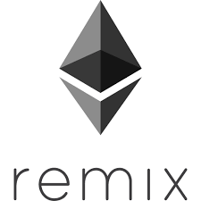
This codelab will walk you through how to create and deploy a smart contract via Remix and how to interact with it from both within Remix or a web-based tool such as MyCrypto. If you'd like more information about what is going on, I would recommend visiting https://github.com/ethereumbook/ethereumbook/blob/develop/02intro.asciidoc or viewing the associated screencast lectures available from class.
What you'll learn
- Basic use of Remix for deploying code to Ethereum
- Interacting with smart contracts via Remix and MyCrypto
- Viewing transactions on Etherscan
What you'll need
- A browser with Metamask installed
- A wallet managed by Metamask with privacy settings disabled
- Log into your Metamask account and ensure you are using Ropsten
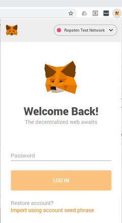
- Visit the Remix IDE at https://remix.ethereum.org
- Hover over the icons shown below to see what they correspond to (File explorer, Solidity compiler, Deploy & run)
- File explorer -- Where the source code of your smart contracts are accessed (stored within browser)
- Solidity compiler -- Where code is compiled into EVM bytecode
- Deploy & run -- Where code is published onto the Ethereum blockchain and executed
- Click the File explorer icon, then create a workspace
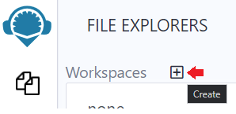
- Click on the document icon to add a new file
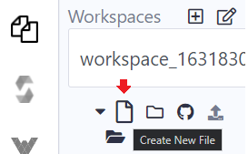
- Name the file "
MyContract.sol"
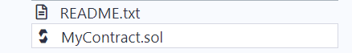
For this lab, we will be deploying a simple contract called MyContract that takes in ETH (the cryptocurrency used for Ethereum transactions). Anyone can send ETH to this contract and anyone can destroy it. Upon destruction, all ETH from the contract is sent to its owner (the wallet that has deployed the contract).
Walk-through the source code
pragma solidity 0.4.24;
contract MyContract {
address public owner;
constructor () public payable {
owner = msg.sender;
}
function getBalance() external view returns(uint) {
return address(this).balance;
}
function cashOut() external {
selfdestruct(owner);
}
function () public payable {
}
}- Solidity compiler version specified as 0.4.24. Can use the syntax ^0.4.24 to denote any compiler higher than 0.4.24
contractkeyword names the contract as MyContract- A single declared storage variable named
owneris defined to be of typeaddress(a 20-byte Ethereum wallet or contract address) - A constructor function sets the
ownervariable of the smart contract tomsg.sender(the address of the wallet that deploys the contract). This will eventually be used to ensure the ETH from the contract is returned to the contract creator getBalance()function is declared with keywordsexternal(function may be called from outside addresses) andview(function does not modify state). Keyword returns specifies that it will return auint(unsigned integer) to represent the balance of the contract.cashOut()function is declared with keywordexternal. It invokes a Solidity built-in function calledselfdestruct()with parameterowner. This destroys the contract, removing its state, but not its history from the blockchain. It then transfers any funds the contract has to the address specified byowner(the creator of the contract). Note thataddress(this)returns the current contract's address and thebalanceattribute which is built-in to Solidity to return the amount of ETH the contract currently has.- A required fallback function
()that is bothpublic(accessible by all) andpayable(can receive ETH). The fallback function is called whenever a user sends a contract ETH directly via their wallet. It is also called when someone tries to call a function in the contract that does not exist. (This will turn into a security issue in one of the SI CTF levels)
Use selfdestruct() at your own peril (if you like keeping your $)
- Ensuring that your contract lives on forever for people to use means that any use of the
selfdestruct()call is protected properly. - Remix contains a static analysis tool that will point out this dangerous call
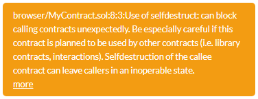
- This is the basis of the Parity multisig wallet bug that caused the loss of $280 million in lost ETH. See article here
- Infamous transaction on Etherscan
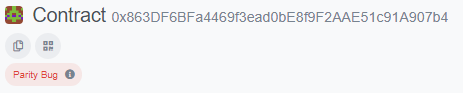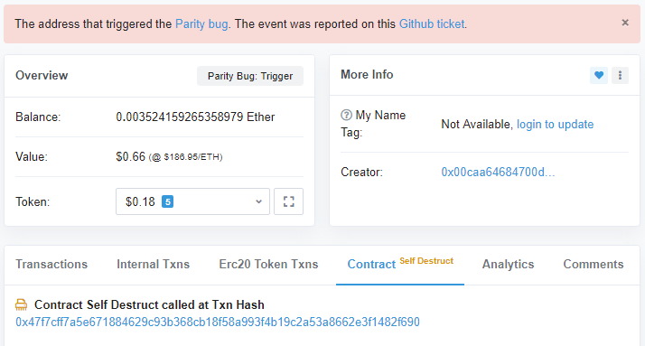
- Github ticket
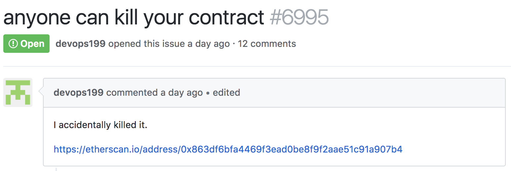
- Go back to the Remix file explorer where you have created
MyContract.soland paste it into the file. The Remix IDE (integrated development environment) uses local HTML5 storage to hold your contract code.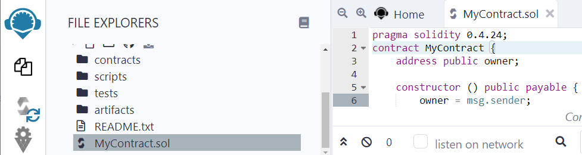 - Click on the Solidity compiler icon to bring up the compiler. In the compile tab, select the compiler version specified in code (e.g. 0.4.24), then click "Compile"
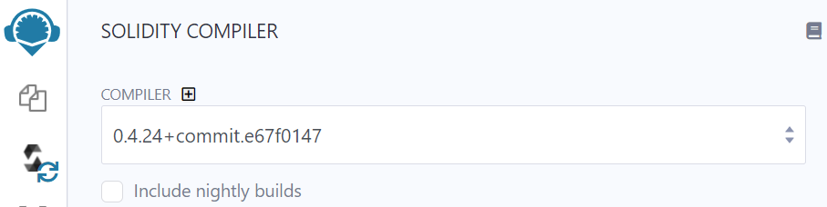
- Look for green check on the compiler icon for success
- Then locate clipboard icons that allow you to copy the contract ABI (Application Binary Interface) and EVM bytecode to the clipboard
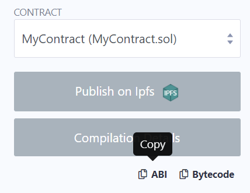
- The ABI is needed for external tools outside of Remix (such as MyCrypto) to interact with the contract.
(For CS students) A contract's ABI is a specification of its binary interface. This allows one to interact with the contract appropriately. The ABI consists of all of the variables in the contract including their types, the functions the contract implements including the parameters and their types. It also specifies any modifiers associated with the variables and functions.
Examine the different parts of MyContract's ABI, by copying it and pasting it into a text document.
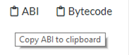
- Specify a getter for the public storage variable address
owner. Getters for public variables are automatically implemented by the Solidity compiler. They have no inputs, are not payable, and are view-only
{
"constant": true,
"inputs": [],
"name": "owner",
"outputs": [
{
"name": "",
"type": "address"
}
],
"payable": false,
"stateMutability": "view",
"type": "function"
},- Specify the
getBalance()function that returns the balance of the contract as auint256.
{
"constant": true,
"inputs": [],
"name": "getBalance",
"outputs": [
{
"name": "",
"type": "uint256"
}
],
"payable": false,
"stateMutability": "view",
"type": "function"
},- Specify the
cashOut()function. Note that it is non-payable in that the function can not be used to receive payment when called. (It can and does send payment)
{
"constant": false,
"inputs": [],
"name": "cashOut",
"outputs": [],
"payable": false,
"stateMutability": "nonpayable",
"type": "function"
},- Specify the non-payable constructor. Constructors that are payable can receive ETH when deployed by their creator. Constructors for SI CTF levels, for example, are payable. MyContract must be send funds via the fallback function (the only payable function that it has)
{
"inputs": [],
"payable": false,
"stateMutability": "nonpayable",
"type": "constructor"
},- Specify the payable fallback function
{
"payable": true,
"stateMutability": "payable",
"type": "fallback"
}- Click on the "Deploy & run transactions" tab
- Use the "Injected Web3" environment. This uses Web3.js to communicate directly with Ethereum blockchain nodes (running a client such as geth). Note that Remix includes a fully functional Ethereum Virtual Machine written in Javascript that allows you to run and test contracts within the browser only.
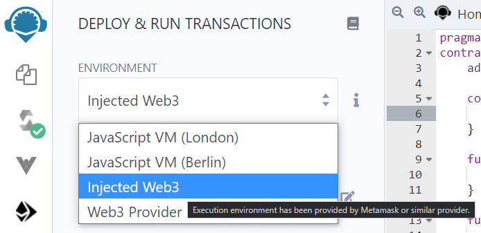
- Ensure you are connected to the Ropsten network after selecting. If you are not on Ropsten, go back to Metamask and ensure Ropsten is selected.
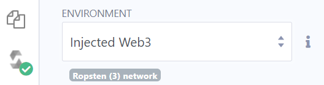
- Click "Deploy". Note that since the constructor is declared "payable", you could have specified an amount of ETH to send the contract via the "Value" field before clicking "Deploy"
- A window will pop up asking you to specify "Gas". This is a nominal amount of ETH needed to give miners on Ethereum the incentive to include your transaction onto the blockchain. Use the default settings that Metamask has suggested. Note: if you are unhappy with the time it is taking for your transactions to process, you may "EDIT" the transaction to increase the "GAS FEE" you're willing to pay, but beware of running out of gas (which will cause your transaction to fail)
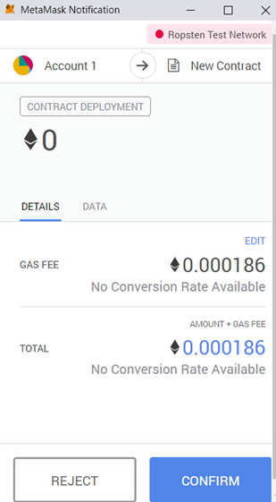
- Wait for the transaction to complete and for the contract's address to show up in Remix

- At the bottom, a clipboard icon appears next to the deployed contract that allows you to copy its address onto the clipboard for use in other tools. Take a screenshot of the above UI in Remix to include in your lab notebook. Ensure that you show both your wallet address and the address of MyContract that you deployed.
On a public blockchain like Ethereum, all transactions are publicly accessible. To view the contract deployment transaction you have just initiated, return to Metamask.
- Click on the most recent transaction in the UI
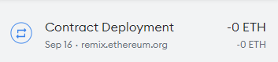
- In the details of the transaction, you will find the amount of gas used to deploy the contract and the price of gas you paid. Finally, you will see the total amount of ETH this represents. From this UI, there is an arrow which is a link that will allow you to view the transaction on Etherscan (a web site that provides a web interface to the Ethereum blockchains). Click on it.
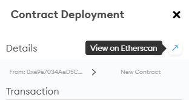
- Etherscan shows the hash of the transaction included in the block. It also shows the block depth (confirmations), the wallet address that created it, and the address of the contract itself (which should be the same as what shows up on Remix) 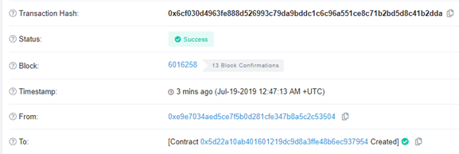
- Take a screenshot of your Etherscan transaction as shown above to include in your lab notebook
Back in Remix, you can access and interact with the contract, by clicking on the contract under the "Deployed contracts" section. Public getters (blue) and contract functions (orange) allow you to interact with the contract
- In the example below, both the contract-defined
getBalance()function and the automatically instantiated getter for the publicowneraddress can be clicked on to reveal their values. Click on both.
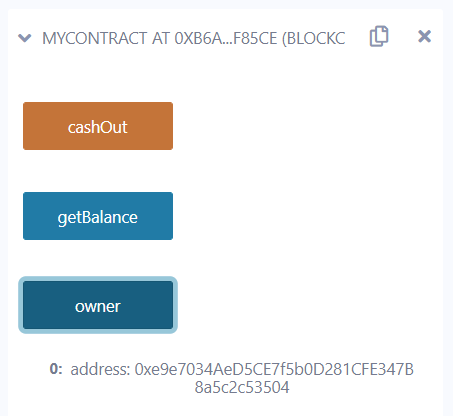
- We will now interact with the contract via a web-based wallet. Go to https://app.mycrypto.com (an open-source web interface for interacting with contracts) to do the same as above. When prompted, connect your account in Metamask to the site.
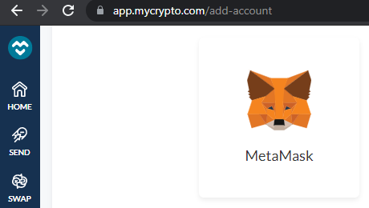
- Under "TOOLS", select "Interact with Contracts" (or go directly to https://app.mycrypto.com/interact-with-contracts ).
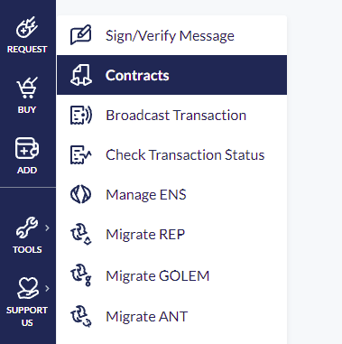
- Set the network to "Ropsten"

- Go to the "Deploy & run transactions" tab of your Remix session to copy the MyContract address onto the clipboard. Paste it into the MyCrypto page above
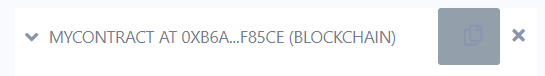
- Go to the "Compile" tab of your Remix session to copy the MyContract ABI onto the clipboard and also paste it into the MyCrypto interface
- You should have something like below
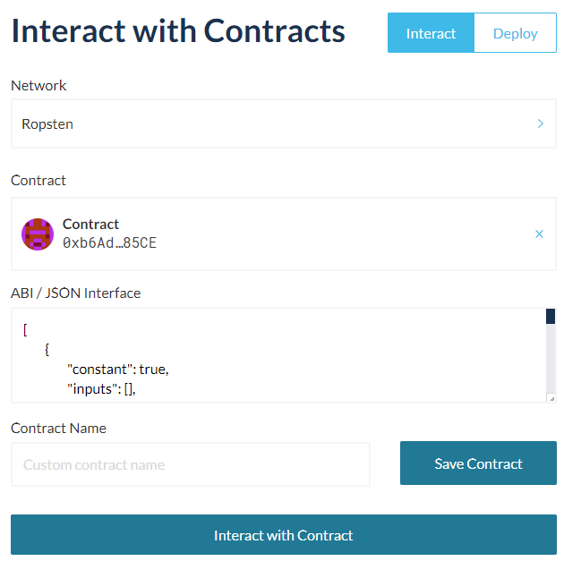
- Click "Interact with Contract", then under "Read/Write" Contract, view the options for interacting with the contract. Click on the owner getter, then click "READ". Take a screenshot to include in your lab notebook.
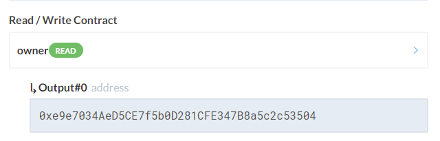
We will now send the contract funds via our Metamask wallet, which will be processed by the payable fallback function.
- Click on Metamask and login if necessary
- Take a screenshot of your wallet to include for your lab notebook to show the amount of ETH you have to start with, then click on "SEND"
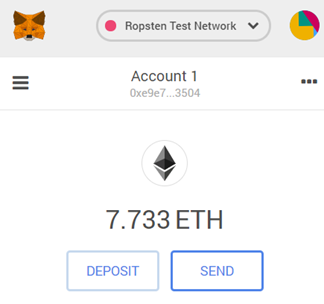
- Copy the contract address into the "To" field. Specify 0.5 ETH as the amount to send. Then click "Next"
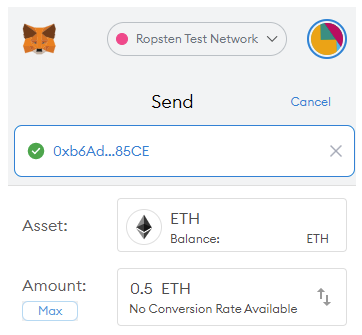
- Click "Confirm" once Metamask has calculated an estimated gas fee to include in the transaction. You may change this fee if you wish to spend less on gas (which slows down the transaction) or to spend more on gas (which speeds up the transaction). When the transaction completes, see the update to your wallet balance.
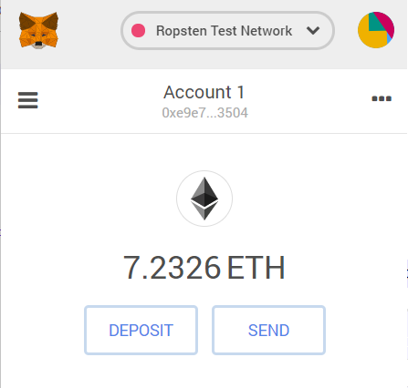
- Bring up the transaction on Metamask and on Etherscan. Note that it shows the transfer from your wallet to the contract.
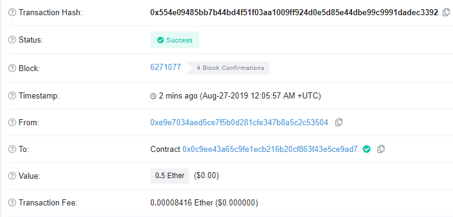
- Bring the contract itself up on Etherscan by copying and pasting its address into the search window on Etherscan or clicking on the contract address in the above UI.
- Take a screenshot of the contract's transactions to include for your lab notebook that includes its creation transaction.
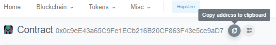
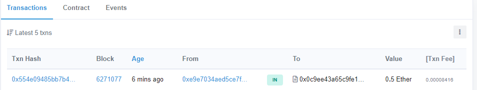

- Note that you can copy your contract's address to the clipboard by clicking on the icon next to its address. You will need this for the next step of this codelab.
- Congratulations. You've deployed and funded a smart contract using Ethereum. Your code and transactions will live forever (or until the heat death of the universe), whichever comes first.
MyContract has an external function call named cashOut() that can be called by anyone. The function will simply destroy the contract and send the funds that it holds to the owner of the contract. While we could use MyCrypto to directly call the cashOut() function, to show how contracts can call other contracts, we will create a second contract in Remix to call cashOut().
Back in Remix, use the same process for creating MyContract, to create another contract to kill it called "KillMyContract"
pragma solidity 0.4.24;
interface MyContract {
function cashOut() external payable;
}
contract KillMyContract {
address myContractAddr = <YourContractAddressForMyContract>;
// (e.g. address myContractAddr = 0x5D22a10ab401601219dc9d8A3Ffe48B6EC937954;
function kill() external {
MyContract mc = MyContract(myContractAddr);
mc.cashOut();
}
function () public payable {
}
}Note that this code must be modified to include the contract address it is intended to call. From the previous step in the lab, copy the address of your version of MyContract that has been deployed and replace the value of
Read the code to find the following in the contract code
- Solidity compiler version specified as 0.4.24
- An
interfaceto MyContract. This specifies the function name and parameters for any function call in MyContract that is called by KillMyContract. In this case, we only wish to call one function in MyContract i.e.cashOut()so it is the only function included in the declaration. - An address storage variable called
myContractAddrthat contains the address of your deployed MyContract set above. - An external function called
kill()for you to call kill()declares a local memory variablemcthat is declared as a MyContract interface type. It is bound to the addressmyContractAddr.kill()then invokes thecashOut()call of mc by invoking it viamc.cashOut()
Repeat the above steps from MyContract for KillMyContract
- Compile and deploy KillMyContract via Remix. Note: The connection between Remix and Metamask may timeout. If your "Deploy" does not work, reload Remix to perform this step. Ensure you are using the "Injected Web3" environment connected to Ropsten.
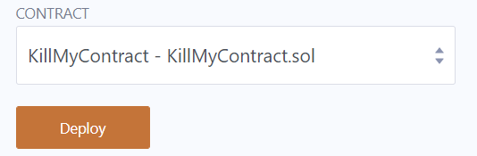
- Then, instead of using MyCrypto to interact with a contract, interact with KillMyContract directly in Remix. Expand the contract and invoke the
kill()function by clicking on it and confirming the transaction through Metamask.
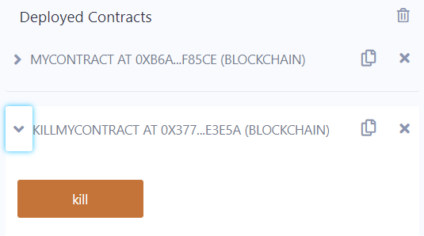
- This will invoke
kill(), which will invokecashOut()on MyContract, which will then cause MyContract toselfdestruct(), which will then send all of MyContract's ETH back to your wallet.
We will now see what shows up on the blockchain for this transaction.
- Go back to Etherscan to locate your original MyContract contract.
- Click on the "Internal Txns" tab. These are transactions that have come from within the blockchain (rather than from a wallet outside of the blockchain)
- Take a screenshot that shows the two internal transactions that have occured to include in your lab notebook. The bottom one is the call from KillMyContract's address to MyContract that invokes
cashOut()while the top one is the result of MyContract's invocation ofselfdestruct()to send the contract's balance over to the owner wallet.
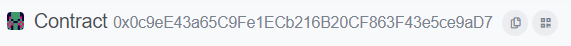
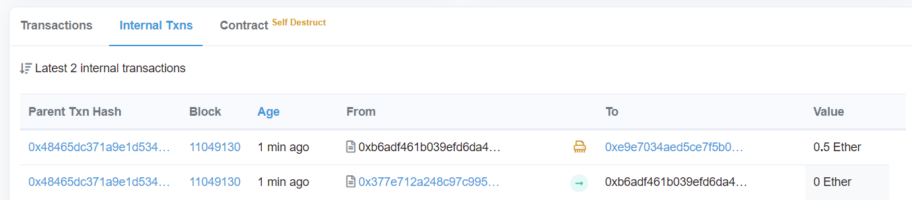
- Next, click on the Contract tab and take a screenshot of the transaction hash that contains the
selfdestruct()call for MyContract.
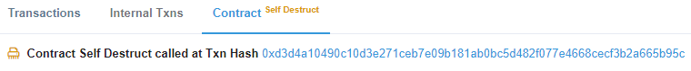
- Click on the hash to bring up its internal transactions. In this trace, notice the call from your wallet address to the address of your KillMyContract contract address has "Produced 2 Contract Internal Transactions". The first is the
call_0transaction representing KillMyContract's call tocashOut()while the second is thesuicide_0_0representing theselfdestruct()call sending the remaining contract balance to the owner wallet (e.g. your wallet address)
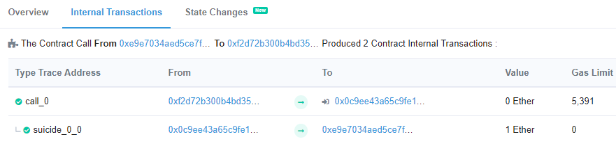
- Click on the Overview tab which summarizes this transaction hash. Take a screenshot and include it in your lab notebook.
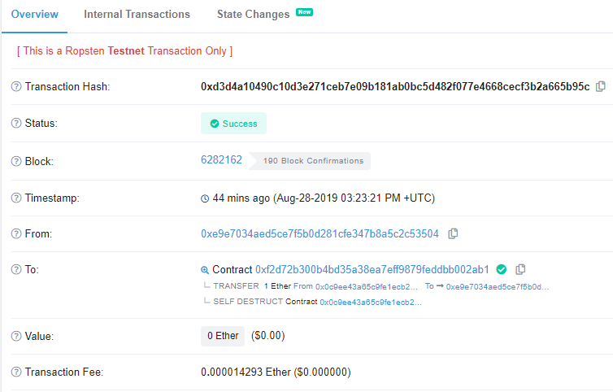
You have now funded a contract and received the funds back from it upon its self-destruction. However, these transactions are not free. To keep the network operating, miners and full-nodes must be paid for their operation. Transaction fees are an often-overlooked fact of life on any blockchain and the myriad of blockchains compete to provide similar functionality at a cheaper price while still ensuring security from tampering.
Determine the amount of ETH you have spent from the beginning of this lab.
- Click on Metamask
- Take a screenshot of your wallet to include for your lab notebook and show the difference in balance from before and after this lab
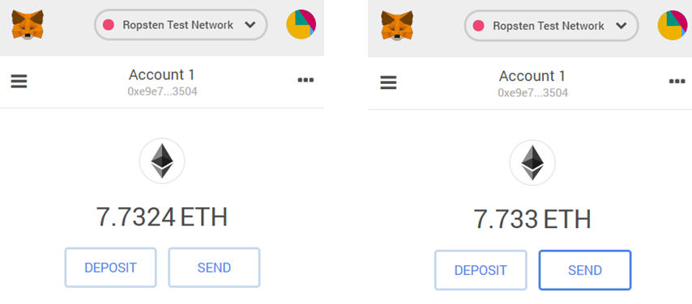
- Convert the difference on Google to show how much $ you would have spent if you had done this lab on the main Ethereum blockchain using today's exchange rate.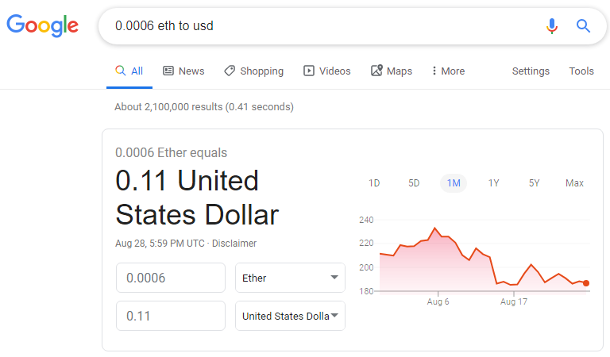
You've completed the "Hello World" of smart contracts and their deployments on Ethereum. While simple contracts such as the ones shown here might make it seem like smart contracts with Solidity are a good idea, subsequent labs and assignments will show you otherwise. Much like we teach C at Portland State in order to show how easy it is to create security problems with it, we teach Solidity to do the same. If you can avoid using Solidity to implement smart contracts, we would recommend doing so.